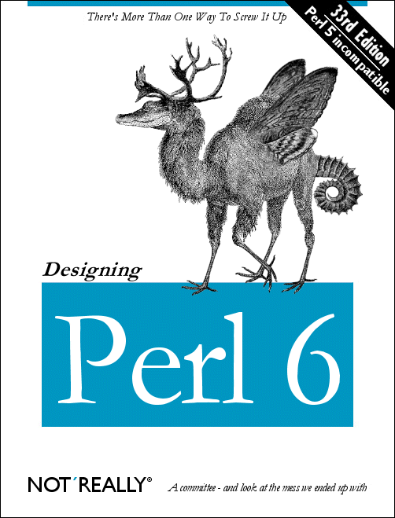

In this post I will describe my experience as a web & system programmer, focusing on the project of building a query recommendation system using query logs.
Alternative civilian service
From October 2003 to December 2005, I had worked at a couple of tech companies for an alternative civilian service. Except being counted as fulfilling mandatory military service that every Korean man is required to serve, an alternative civilian service is just the same as working at a usual company. First one applies for a position at a company that has a quota for such an alternative service, and when he gets a job he needs to work for a certain duration, not necessarily at a single company.
On the one hand, landing on such a job may be difficult because there is a limited number of such positions. But on the other hand it may be easier than getting a "real" job, because usually those positions are underpaid and once you start at one place it is not easy to move to another place because of many regulations and policies and therefore companies are more than willing to fill the spots. I have little idea the net difficulty is plus or minus on average, but in my case I think I was just lucky in both finding such positions and having wonderful colleagues at both workplaces.
Learning how to code
The first company that I worked for a year was Softwise in Seoul, Korea. The company's key product was developing and deploying intra- and internet search engines. When I started working there, it was the provider of the web search engine for Yahoo! Korea. Back then Yahoo! was one of big players in web search engine business, so there were plenty of good people and resources. I was thrilled to work at the company because I read all exciting things about the Internet and search engines; it was the beginning of the new millennium and the time was like that.
I was the youngest in the company and also knew next to nothing about programming, letting alone web search engines. Fortunately my seniors there were usually computer science majors and/or had plenty of programming experiences, and many of them were very kind toward a novice like me. (Of course there always are a couple of mean guys, but that's life, I suppose.) So during the one year I was able to learn a lot about writing codes and and designing programs.
Wiki and Python
It was there that I first saw a wiki being used as a collaborative idea pool and a notice board for a team. We were using MoinMoin, which is written in Python. I think the Python version we were using at that time was 1.x. I was fascinated by wiki since then and I keep maintaining a personal wiki for various purposes. However I was not impressed with Python at that time; I thought it was a niche language and did not pay much attention to it until a few years ago, which I become to regret quite a bit nowadays. It would have been much more fun if I was able to foresee the bright future of Python at that time and participated in the development of Python community!
There were no wonderful libraries like NumPy and SciPy at that time. Because of that, and probably because the Python implementation itself was not as fast as it is these days, plus slower computing power and fewer resources, Python was not ready for its prime time back then, and the major products in the company were written in C/C++. Python was considered to be a script language and around that time Perl was the king of script languages. It seems that Perl has disappeared into nowhere these days except deep in the code for bioinformatics, which is not surprising considering its notoriously bad readability and the culture of Perl community making a competition of writing a code as short as possible at the sacrifice of everything else.
{kind=link}
Web and database programming
The second project was building an administration system for the database search system of Yahoo! Korea. During this project I learned PHP and MySQL, another eye-opening experience of web scripts and databases, thanks to which I understand SQL jokes like the following xkcd comic:

It was a fun project because I learned new things and because it was a short one. But in retrospect there was not much intrinsically interesting about the project.
Armwrestling with Windows Server
And then came the third project, building a query recommendation system, which is the main topic of this post. Ironically, at that time I didn't give much about this project compared to others, but in retrospect I think this was the best project during the year at the company. First of all, this was my first project of building a prototype based on a new algorithm appeared on a computer science research paper, which then developed into a full commercial service deployed to Nate, one of the top 3 web portals of South Korea at that time with the most local page views of 3.8 million among the three. Secondly, this was also the first time that I was challenged with designing multiprocessing and multithreading program, this time using Visual C++ and MS-SQL because Nate was operating on Windows Server system: multiprocessing was needed to process query logs in parallel, multithreading was required for the admin GUI not to freeze while running the analysis module in the background.
Experience of using Windows Server was kind of comical; there is nothing wrong with Visual C++ or MS-SQL, rather I loved and still like the polished aspect of those commercial softwares in comparison to open source softwares like gcc or MySQL, like a suit vs. a jean. The only thing I hated was, somehow Windows Server at that time (probably it was Windows Server 2000) lacked any good command-line interface, so I had to connect to a server via Windows remote desktop and do most of the work using a mouse. Again, nothing wrong with using a mouse and I think Windows is a good OS for a desktop, the problem was that this was a server far away from my office and the internet speed was not fantastic like it is nowadays, therefore there was a bit of delay between moving my mouse and the mouse cursor actually moving as the signal did an expensive round-trip from my client to the server back to my client with all the pixel data carried along. And human brain, or rather my brain, recognized this in a funny way such that I pushed and pulled my mouse harder as if the mouse cursor was moving in that way because it was heavy and I was not exerting enough force to move it around. The result was that I got easily exhausted with the hard work of double clicking a few icons to start and stop a service.
Query recommendation using query logs
Finally let me describe how we built the recommendation system. Unfortunately I cannot recall everything in full detail, because it was more than a decade ago and I didn't leave any document of that experience. I will instead describe what I probably did that fits all the fragments of my memory and introduce a couple of papers [1] [2] related to query recommendation that somehow I was able to recall the names of the authors from a remote corner of my brain.
The idea of [1] is simple but works good when there is a large dataset available. First imagine what we do when we use Google. We first type in a sequence of words, which is a query, into a search box and see the result. If we are lucky we will find what we want in the result page, click the URL and off we go. But if we are not satisfied with the result, which may be due to a typo or due to not picking the right query, we come up with a different query, submit it, and check the result. This will go on until we find a satisfactory result, and the series of queries is a session, whose end is marked with the user clicking one of the URLs in the result. Then we say the queries appearing in a session are related, and the goal is that when a user inputs a query, we want to provide the user recommended queries sorted by rank. Below is a part of the AOL query logs available on the internet, where the first column shows an anonymous user ID number, the second column is the query, and the last column is the URL the user clicked. Can you guess what the two users were looking for?
2722 target 2006-04-13 21:09:43
2722 target 2006-04-17 09:58:40 1 http://www.target.com
2722 lowes 2006-04-17 21:25:44 1 http://www.lowes.com
2722 door viewer 2006-04-17 21:41:04 1 http://www.qualityplans.com
2722 door viewer 2006-04-17 21:41:04 2 http://www.directdoorhardware.com
2722 door viewer 2006-04-17 21:41:04 3 http://www.alibaba.com
2722 door viewer 2006-04-17 21:41:04 4 http://www.quietek.com.au
2722 peep hole 2006-04-17 21:44:02 4 http://www.safetycentral.com
2722 peephole 2006-04-17 21:44:56
2722 home depot 2006-04-17 21:49:21 1 http://www.homedepot.com
2722 sears 2006-04-17 22:04:45
2722 walmart 2006-04-17 22:13:22
2722 target 2006-04-17 22:16:21
2722 door viewer 2006-04-17 22:19:50
3302 disneyworld vacation packs 2006-05-23 17:42:44
3302 disneyworld vacation packagess 2006-05-23 17:43:35
3302 disney world vacation packages 2006-05-23 17:43:42
3302 disney world vacation packs 2006-05-23 17:44:41
3302 disneyworld vacation packagess 2006-05-23 17:44:52
3302 disney world vacation packages 2006-05-23 17:44:57
3302 disneyworld vacation packages 2006-05-27 02:14:10
3302 disney world vacation packages 2006-05-27 02:14:20 1 http://disneyworld.disney.go.com
3302 disney world mickey's very merry christmas party 2006-05-27 02:40:14 1 http://disneyworld.disney.go.com
Defining a user session was a point of dispute back in the day, and in [1] it is done by splitting queries from the same IP address by a fixed time interval. But I think we can do better these days thanks to the advancement of web browser and web server technologies, such that we can actually define a true user session. Then the question becomes how to rank the related queries, e.g. how to give a ranking for a relation of two queries. The suggestion of [1] is straightforward: we rank a pair of queries \((q_1, q_2)\) by the percentage of sessions in all the sessions containing both query \(q_1\) and query \(q_2\). This is simple enough to apply to large log data, and this is the key: we need a large dataset of queries, otherwise the estimation will be too noisy.
Indeed this algorithm was simple enough to analyze all the query logs and update the ranking within one day back then when we were building the recommendation system, and it was powerful enough to provide query recommendation service for the web portal without further modification, largely thanks to the fact that it was a major web portal with so many visitors furnishing queries to the search engine.
But if you google "query recommendation" then the first paper that comes up is [2], and I somehow have thought that the algorithm we applied for the service was from the paper before reading both papers. Let me say a few things I gathered from the other paper. One weakness of [1] pointed out by [2] is that two queries are related only if they appear in the same user session. So if there are two queries each of which is submitted in a separate session, they will have no relation.
So [2] suggests that instead we should group queries into clusters by similarity defined in the paper. Then when an input query \(Q\) is given by a user, we identify the cluster it belongs to, calculate a rank of each query \(q_i\) inside the cluster, and recommend queries ordered by the ranks. The rank of each \(q_i\) is calculated by combining
- the similarity between \(Q\) (the input query) and \(q_i\) (the query to recommend), and
- the support of \(q_i\), which indicates how many users find \(q_i\) helpful and is calculated from the clicked results, assuming that a helpful query results in many clicks by users among the search results brought by the query.
The whole business of query recommendation, in retrospect, has a strong flavor of data science: requirement of large data to separate the signal from the noise, \(k\)-means clustering, classification by user feedback, and so on. In the future, I would like to implement both algorithms and see how one fares against the other using public query datasets available. Although query clustering sounds fancy and interesting, it seems that once there is a large number of queries probably the straightforward algorithm of using query sessions will perform as good as or even better than the query clustering algorithm.
Epilogue
Unfortunately, around the time of the end of my third project, when I felt I was finally ready to work on the interesting project of web search engine development, Yahoo! Korea declared that they will end the contract with Softwise because Yahoo! HQ's global policy has changed to using a single search engine for all the international Yahoo! portals. And in any case Google was becoming a dominant player in the web search business, so Softwise aborted web search engine development and focused on getting contract projects of developing intranet search engines for public departments and private companies. Disappointed with that, I moved to another company that makes atomic force microscope (AFM) and had a project of working with an OS (NetBSD) kernel for me, which I will describe in this post.
Comments
comments powered by Disqus